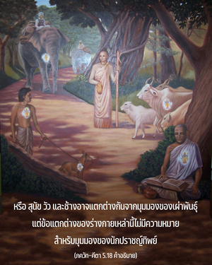

ด้วยสายตาที่เสมอภาค")
ด้วยผลจากความรู้ที่แท้จริง นักปราชญ์ผู้ถ่อมตนมองเห็นพราหมณ์สุภาพผู้คงแก่เรียน วัว ช้าง สุนัข หรือคนกินสุนัข (คนชั้นต่ำ) ด้วยสายตาที่เสมอภาค



บุคคลผู้มีกฺฤษฺณจิตสำนึกไม่แบ่งแยกระหว่างเผ่าพันธุ์ หรือชั้นวรรณะ พราหมณ์และคนชั้นต่ำอาจแตกต่างกันในมุมมองของสังคม หรือ สุนัข วัว และช้างอาจแตกต่างกันจากมุมมองของเผ่าพันธุ์ แต่ข้อแตกต่างของร่างกายเหล่านี้ไม่มีความหมายสำหรับมุมมองของนักปราชญ์ทิพย์ ที่เป็นเช่นนี้ได้ก็เนื่องมาจากความสัมพันธ์ที่มีต่อองค์ภควานฺ เพราะว่าภาคอวตารอภิวิญญาณขององค์ภควานฺทรงประทับอยู่ภายในหัวใจของทุกๆ ชีวิตความเข้าใจถึงองค์ภควานฺ เช่นนี้คือสัจธรรม เกี่ยวกับร่างกายในชั้นวรรณะ หรือเผ่าพันธุ์ของชีวิตที่แตกต่างกัน องค์ภควานฺทรงมีพระเมตตาเสมอภาคต่อทุกๆ ชีวิต เพราะว่าพระองค์ทรงปฏิบัติต่อทุกชีวิตเสมือนดังสหายของพระองค์ และยังทรงดำรงพระองค์เองเป็น ปรมาตฺมา ไม่ว่าสถานภาพของสิ่งมีชีวิตจะเป็นเช่นไร องค์ภควานฺในรูปของ ปรมาตฺมา ทรงประทับอยู่ทั้งในคนชั้นต่ำ และในพราหมณ์แม้ว่าร่างของพราหมณ์ และร่างของคนชั้นต่ำจะไม่เหมือนกัน ร่างกายเป็นผลผลิตทางวัตถุในระดับของธรรมชาติวัตถุที่แตกต่างกัน แต่ดวงวิญญาณและอภิวิญญาณภายในร่างกายมีคุณสมบัติทิพย์เท่าเทียมกัน คุณสมบัติของปัจเจกวิญญาณ และอภิวิญญาณคล้ายคลึงกัน อย่างไรก็ดี คงไม่ได้ทำให้ปริมาณของทั้งสองเท่าเทียมกัน เพราะว่าปัจเจกวิญญาณอาศัยอยู่ในเฉพาะร่างร่างหนึ่งเท่านั้น ในขณะที่อภิวิญญาณทรงประทับอยู่ในทุกๆ ร่างบุคคลผู้มีกฺฤษฺณจิตสำนึกมีความรู้อย่างสมบูรณ์ในข้อนี้ ฉะนั้น จึงเป็นนักปราชญ์ที่แท้จริงและมีวิศัยทัศน์ที่เสมอภาค ลักษณะที่คล้ายคลึงกันของอนุวิญญาณและอภิวิญญาณ คือ ทั้งคู่มีจิตสำนึกที่เป็นอมตะ และมีความปลื้มปีติสุข แต่ข้อแตกต่างคือ ปัจเจกวิญญาณมีจิตสำนึกภายในอาณาเขตของร่างกายที่จำกัด ในขณะที่อภิวิญญาณทรงมีจิตสำนึกของร่างกายทั้งหมด องค์อภิวิญญาณทรงประทับอยู่ในทุกๆ ร่างกายโดยไม่มีการแบ่งแยก